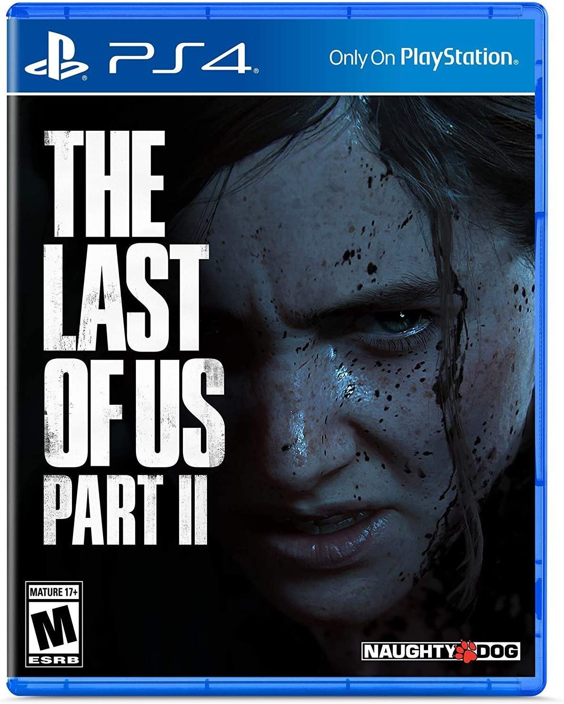
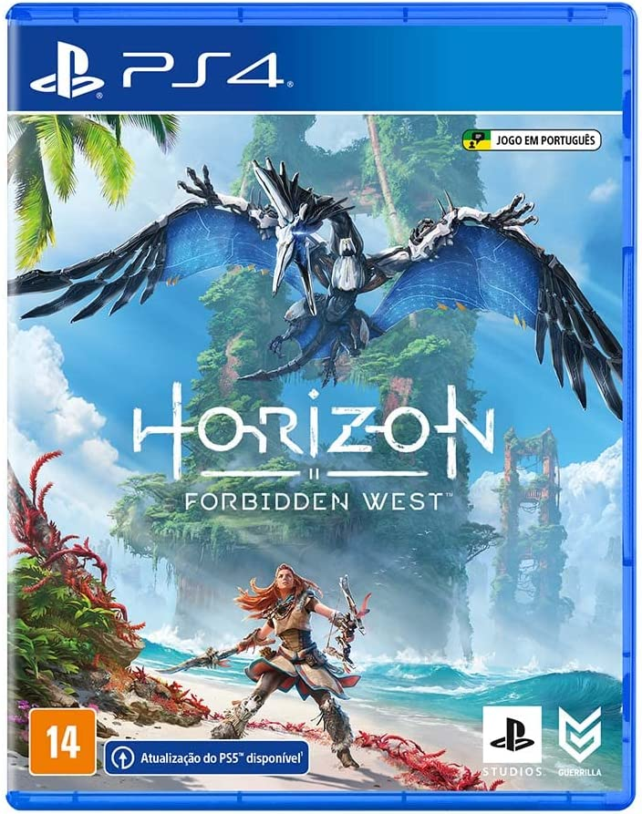

God of War Ragnarok
God of War Ragnarök é um jogo eletrônico de ação-aventura desenvolvido pela Santa Monica Studio e publicado pela Sony Interactive Entertainment. Foi lançado em 9 de novembro de 2022 para PlayStation 4 e PlayStation 5. É o nono título da série God of War, o nono em ordem cronológica, e a sequência de God of War.
Resident Evil 4 Remake
Resident Evil 4, conhecido no Japão como Biohazard RE:4, é um jogo eletrônico de survival horror desenvolvido e publicado pela Capcom. É um remake de Resident Evil 4, lançado originalmente em 2005 para o Nintendo
The Last Of Us part II
The Last of Us Part II é um jogo eletrônico de ação-aventura desenvolvido pela Naughty Dog e publicado pela Sony Interactive Entertainment. É o segundo jogo da franquia e foi lançado em 19 de junho de 2020 exclusivamente para PlayStation 4

Hollow Knight
Hollow Knight é um jogo indie de gênero metroidvania desenvolvido e publicado pela Team Cherry, lançado para Microsoft Windows, macOS e Linux em 2017 e, posteriormente, para Nintendo Switch, Playstation 4 e Xbox
Bloodborne
Bloodborne é um RPG eletrônico de ação produzido pela FromSoftware e publicado pela Sony Computer Entertainment a 24 de Março de 2015 em exclusivo para a PlayStation 4
Horizon Zero Dawn
Horizon Zero Dawn é um jogo eletrônico de RPG de ação pós-apocalíptico em um mundo aberto, desenvolvido pela Guerrilla Games, apresentado em 2015 na conferencia da Sony na feira E3 e lançado em 28 de fevereiro de 2017 para o console PlayStation 4 e em 7 de agosto de 2020 para o sistema Microsoft Windows.
